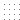
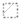

hover help
Key:
Known Range
Possible Range
 Doubtful Range
 Survey Zone
Protected Area
Known Range: Areas in suitable habitat which, if searched with reasonable
intensity, are likely to yield signs of elephant presence. If no information
is obtained confirming the presence of elephants for a 10 year period, KNOWN
range is downgraded to POSSIBLE range.
Possible Range: Areas within historical range and in suitable habitat
where there are no negative data to rule out the presence of elephants, including
former areas of KNOWN range where the source information is more than 10 years
old. Areas of POSSIBLE range are considered to be a priority for studies to
establish the presence or absence of elephants.
Doubtful Range: Areas where there are reasons to believe that elephants
are no longer present, but which have not been formally surveyed. If further
corroborative evidence is obtained, areas of DOUBTFUL range are reclassified
as NON-RANGE. As with POSSIBLE range, areas of DOUBTFUL range are a priority for
absence/presence studies.
Survey Zone: Input zones where formal surveys have been performed.
Protected Area: An area where wildlife populations are protected by
official designation and legislation.